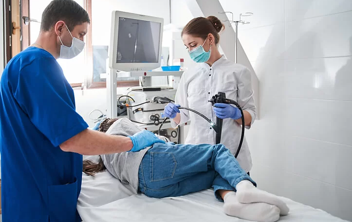

Endoscopy
in the identification of abnormalities, inflammation, or tumors. Beyond diagnosis, it facilitates therapeutic interventions such as the removal of polyps, tissue biopsies, and the treatment of gastrointestinal bleeding. Patients benefit from the reduced invasiveness, shorter recovery times, and decreased postoperative discomfort associated with traditional surgical methods.
Our skilled endoscopy specialists ensure the highest standards of care, utilizing state-of-the-art equipment to enhance both diagnostic accuracy and patient comfort. Through this advanced procedure, we are committed to delivering comprehensive and compassionate healthcare, promoting early detection, and optimizing treatment outcomes.